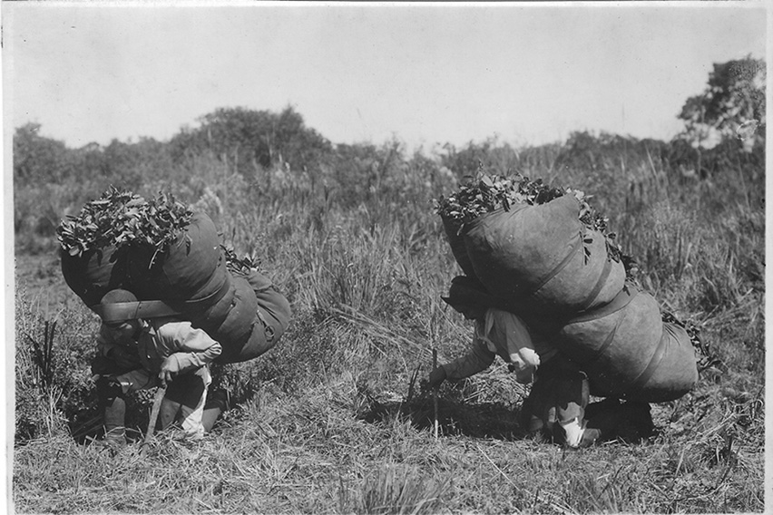
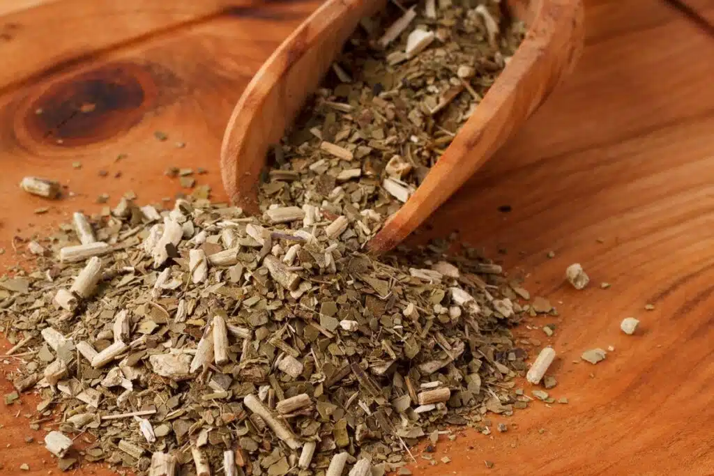

sejam bem vindos ao meu site
O uso da erva-mate pelos povos indígenas remonta a tempos muito antigos na América do Sul, especialmente
entre os povos Guarani e Kaingang, que habitavam regiões das bacias dos rios Paraná, Paraguai e Uruguai.
Para esses povos, a planta não era apenas utilizada como bebida, mas também possuía importância social,
cultural e espiritual, estando presente em rituais, momentos de convivência e práticas tradicionais.

informe aqui o autor e a forte da primeira imagem.
O contexto histórico da erva-mate envolve a herança indígena, os jesuítas e o ciclo econômico do Sul.
A erva-mate se desenvolve no Paraná desde o período pré-colonial com os povos indígenas, expande-se
economicamente nos séculos XIX e XX como o maior ciclo do estado, e hoje se concentra no Sul paranaense
por meio de cultivo agroflorestal sustentável. Além de sua importância econômica, a erva-mate possui
grande valor cultural e histórico para o Paraná. Os povos indígenas, especialmente os Guarani, já
utilizavam a planta antes da chegada dos colonizadores, tanto para consumo quanto em práticas
tradicionais. Com o passar do tempo, a produção da erva-mate cresceu e passou a movimentar o comércio e
a economia paranaense. Atualmente, o Paraná continua sendo uma importante região produtora, e o cultivo
da erva-mate também contribui para a preservação da vegetação nativa e da biodiversidade quando
realizado em sistemas agroflorestais.
 informe aqui o autor e a forte da segunda imagem.
informe aqui o autor e a forte da segunda imagem.
Possui grande importância cultural e histórica, sendo símbolo de identidade dos povos indígenas.
A erva-mate é vital para a identidade paranaense porque foi o motor da economia estadual no século XIX,
está presente na bandeira oficial do estado e simboliza a herança cultural e histórica do Paraná. Além
disso, a erva-mate faz parte dos costumes e tradições da população paranaense, estando presente no
tradicional chimarrão. Sua produção também contribuiu para o desenvolvimento de diversas regiões do
estado, gerando empregos e movimentando o comércio. Dessa forma, a erva-mate representa não apenas uma
atividade econômica, mas também a história, a cultura e a identidade do povo paranaense..

informe aqui o autor e a forte da terceira imagem.
curiosidades
curiosidade 1
🌿 A erva-mate (Ilex paraguariensis) é uma planta nativa da América do Sul, especialmente importante
no Sul do Brasil, Paraguai, Argentina e partes do Uruguai.
🧉 O consumo tradicional de erva-mate está ligado a diversos povos indígenas, incluindo os Guarani,
que já utilizavam a planta muito antes da chegada dos europeus.
curiosidade 2
🏹 Os povos indígenas conheciam formas de coletar, preparar e consumir a erva-mate muito antes de ela
se tornar um produto comercial.
⛵ Os colonizadores europeus conheceram o hábito por meio dos indígenas e, posteriormente, a produção
e o comércio da erva-mate se expandiram bastante.
🇧🇷 No Paraná, a erva-mate teve enorme importância histórica e econômica, contribuindo para o
desenvolvimento da região.